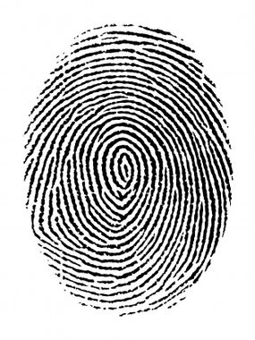
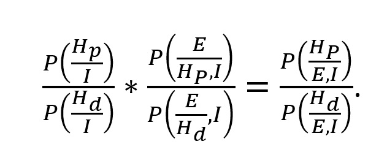

"Les différentes spécialités de la police scientifique"
La police scientifique est une branche de la gendarmerie et de la police nationale composée de scientifiques.
Leur objectif est d'aider les enquêteurs dans leurs affaires en analysant les preuves laissées sur les scènes de crimes.
Ce site a pour objectif de vous faire découvrir les différentes activités de cette profession
au travers des nombreuses spécialités.
Une scène de crime est représentée sur l'image ci-dessous. C'est à vous de repérer les différents indices
présents. Cliquez dessus et différentes fenêtres avec une présentation pour chaque spécialité apparaîtront.

1. Expert en empreinte (biologie génétique)
a. Types de traces
La trace est la marque, visible ou invisible, laissée par les crêtes papillaires sur un support. Lorsqu’un malfaiteur manipule un objet sur les lieux d’un délit ou d’un crime, il peut laisser des traces digitales (doigts) ou palmaires (paumes).
i. Traces visibles
Ces traces visibles à l’œil nu sont qualifiées de positives s’il s’agit d’un dépôt de matière ou négative s’il s’agit d’un enlèvement de matière (dans la poussière par exemple). Ces traces sont photographiées sous des éclairages adaptés.
ii Traces invisibles
Ceci est le résultat d’un dépôt de composés présents dans les crêtes papillaires (sueur par exemple). Dans la plupart des cas il faut utiliser une méthode d’identification spécifique que nous allons détailler dans la partie "procédé révélation".
iii. Traces moulues
Ceux sont des traces en 3 dimensions visibles à l’œil nu (une trace dans de la cire de bougie par exemple). Leur révélation se fait par moulage.
b. Empreintes
L’empreinte est le résultat de l’apposition complète des crêtes papillaires après encrage de celles-ci. Les empreintes d’un délinquant sont prélevées lors des opérations de signalisation effectuées dans les locaux de police.
i. Composition des traces papillaires et origine des différentes sécrétions
Le derme (95% de la composition de la peau) est elle-même composée de 5 millions de glandes sécrétrices. Ces dernières sont à l’origine de la sueurs et autres dépôts qui forment les traces digitales. Les trois glandes sécrétrices principales sont :
-les glandes eccrines qui produisent une grande majorité d’eau mais aussi des composés organiques et inorganiques (sodium, acide lactique).
-les glandes sébacées qui sécrètent en majorité du sébum qui est lui-même composé d’une grande variété de composés organiques (acide gras, cholestérol).
-les glandes apocrines dont la composition est encore mal définie car contaminée par les deux glandes précédentes.
c. Procédés révélation
Le choix des différents procédés que nous allons présenter dépend de plusieurs paramètres tel que l’ancienneté de la trace, le type, l’état du support….
• L’épiscopie coaxiale est une méthode optique non destructrice. Elle consiste en mettre en évidence les contrastes de réflexions de la traces avec le support. En effet la trace est le support n’ont pas le même type de réflexion. Le support émet une réflexion spéculaire. Ce type de réflexion émet un faisceau de lumière unique sombre alors que la trace émet une réflexion diffusive soit plusieurs faisceau clairs. Ainsi ce procédé est utilisé avec des surfaces lisses et réfléchissantes (miroir par exemple).

• Les vapeurs de cyanoacrylates est un procédé de surface lisse est sèche. En premier lieu nous obtenons des vapeurs à partir d’ester de cyanoacrylates qui ensuite forme un solide blanc. Ainsi la trace peut apparaître. Cette technique est très largement utilisée car bon marché, sensible et facile.
• La suspension de microparticules est une méthode très puissante car elle permet de mettre en évidence des traces sur des surfaces qui ont été mouillés ou passés sous l’eau. Il s’agit de saupoudrer la zone avec une poudre qui réagit avec les composés insolubles dans l’eau (ce qui est le cas de nombreux composés sécrétés par les glandes capillaires). Cependant cette méthode est destructrice (perte des traces) et montre une efficacité limité.
• La poudre colorée est une méthode encore une fois très largement employée car facile et bon marché. Il existe différents types de poudres (luminescentes, de différentes couleurs) qui réagit cette fois ci avec l’eau, très largement sécrétée par les traces papillaires. Cette méthode est par ailleurs limitante car fonctionnel avec un nombre de surface très limité et non compatible avec une recherche d’ADN ultérieure.
• Il existe encore de nombreuses techniques tel que le bain de ninhydrine, le révélateur physique ou encore les vapeurs d’iode.
2. Expert ADN
L’étude de l’ADN est cruciale dans la résolution de nombreuses affaires criminelles car elle permet de dresser un profil génétique et ainsi d’identifier les acteurs dans une affaires policières de façon précise, fiable et rapide. L’avantage avec l’ADN est qu’il est présent partout : dans le sperme, les cheveux, la peau… Il est donc facile de laisser son ADN sur une scène de crime. La police scientifique doit donc trouver ces indices pour ensuite l’analyser à l’aide de différentes étapes qui sont détaillées dans les parties suivantes.
a.PCR
La découverte de ce procédé par Kary Mullis a très largement révolutionné le monde de la génétique et par la même occasion a permis de résoudre de nombreuses affaires criminelles. Cette technique permet la multiplication en grande quantité d’une petite fraction d’ADN.
Par ailleurs la principale difficulté à contourner pour cette méthode est d’éviter toute forme de contamination de l’ADN. C’est pourquoi les techniciens de police scientifiques qui effectuent les prélèvements doivent porter une blouse de protection pour éviter toute contamination. Aujourd’hui encore, de nombreux projets sont menés pour tenter de pallier à ce problème.
b.Electrophorèse
L’électrophorèse est la dernière étape de l’analyse est permet de séparer les molécules en fonction de leur taille en appliquant un champ électrique. Cette méthode est utile dans l’analyse de l’ADN du fait que cette dernière est chargée négativement et va donc interagir avec le champ électrique. Plus la taille de la molécule d’ADN est petite plus elle migre vite. A la fin de cette méthode nous pouvons donc obtenir un profil génétique qui permet l’identification d’un individus.
c.Multiplex
Cette méthode permet l’analyse de plusieurs STR (Short Tandem Repeat soit des courtes séquences d’ADN répétées) simultanément. Ainsi cela revient à faire la même application que précédemment mais sur plusieurs STR en même temps.
d.Identification ADN
Une fois le profil obtenu il faut pouvoir comparer ce dernier avec une trace. Pour se faire il faut procéder à une méthode de calcul basée sur les statistiques. Par ailleurs même si les deux profils concordent on ne peut procéder à une identification formelle. En effet le profil d’ADN obtenu peut être partagé par une partie de la population. Il faut donc étudier la fréquence du profil d’ADN obtenu au sein de la population (chiffres répertoriés et régulièrement mis à jours par différents centre de recherches). Si un profil a une faible fréquence, nous serons plus aptes à valider l’identification.
Le théorème utilisé pour l’approche statistique est l’approche Bayésienne. Ce calcul dépend des indices matériels recueillis mais aussi l’information analytique de l’expert et des informations recueillis durant l’enquête. Le calcul est le suivant :

I : informations générales sur l’affaire (circonstances)
E : évidences (concordances entre une trace et le matériel de comparaison)
HP : hypothèse selon la quelle le suspect est à l’origine de la trace d’ADN
Hd : hypothèse selon laquelle une tiers personne est à l’origine de la trace d’ADN
3. Les experts véhicules
Les principales missions de l’expert en véhicule sont l’identification d’automobile ou l’analyse d’accident. Il existe des méthodes propres à l’identification de véhicules et à l’études de débris.
a. Les méthodes d’identification de véhicule
La plus courante est simplement la détermination du numéro de série du véhicule. Pour cela il faut avoir recours a plusieurs méthode de maquillage qui peuvent faire réapparaitre les numéros de séries dégradés ou modifier par exemple. De nombreux autres composants de la voiture portent aussi ce numéro de série.
Par ailleurs, de façon plus récente, de plus en plus de voiture ont des systèmes électriques embarqués. Aujourd’hui la police scientifique est capable d’obtenir différentes informations de ces gadgets et ainsi procéder à une identification du véhicule.
b. Les méthodes d’étude de débris
Encore une fois, l’objectif de cette étude est l’identification de véhicule notamment lors d’un délit de fuite. Le premier réflexe est d’analyser les traces de pneus laissés au sol. L’identification est possible grâce à une large banque de donnée régulièrement mise à jour.
En l’absence de marque, l’analyse des débris permet le même résultat. Ces derniers sont collectés sur un moulage de glace pour être ensuite analysé en laboratoire et comparé aux bases de donné.
c. Le transferts de matière
Les experts en véhicules peuvent être amener à étudier ce que l’on appel un transfert de matière soit des éclats de peintures laissés par frottement. Il existe de nombreuses méthodes d’analyse des différentes couches de peinture tel que l’observation au microscope, la colorimétrie, la spectroscopie infrarouge…
d. L’analyse d’accident
L’étude d’une scène d’un accident de voiture permet la modélisation cinématique de celle-ci. L’étude de l’ensemble des preuves précédentes (peinture, trace de pneu, systèmes électriques embarqués) permettent de répondre à un grand nombre de question. Cela peut être la cause de l’accident, la visibilité du conducteur avant le choc, est ce que le système de freinage était défectueux ….
4. Traitement d’image signal et parole
a. Analyse de son
L’analyse de son consiste principalement en l’identification de voix ce qui est particulièrement utile lors de prise d’otage par exemple. La voix est influencée par la corpulence d’une personne, son sexe et bien d’autres caractéristiques. Elle est donc considéré comme unique pour chaque individu comme l’ADN mais est beaucoup plus compliqué à analyser.
Du fait de la qualité de certains enregistrements, l’utilisation de filtrage sélectifs permet l’élimination de bruits parasites.
b. Analyse d’image
Grace à des logiciels de traitement de l’image, les experts ont recours à une « amplification » soit à une amélioration de la qualité de l’image pour une meilleure identification. Nous pouvons par exemple rendre une image plus nettes ou éliminer des parasites visuels. Les experts peuvent donc ensuite procéder à la phase d’identification. Ceci consiste, toujours à l’aide de logiciels de traitement de l’image, à déterminer de nombreuses informations. Entre autre nous pouvons déterminer si la vidéo a été manipulée, la date du saisi, la taille réelle d’objets ou de personnes…
c. Sources des saisies
Les sources d’images et de signaux sonores sont multiples. Il peut s’agir par exemple d’une vidéo ou enregistrement amateur sur un portable. Il peut s’agir de l’étude d’une boîte noir suite à un accident aéronautique ou de caméras et/ou micros de surveillance. Du fait de cette variabilité des sources, les experts en analyse de signal ont recours à un grand nombre de méthodes, de matériel et de logiciel de lecture.
5. Traitement numérique
Ce département analyse les différents supports numérique. Cela peut être par exemple les disques durs. Ce département est lui-même divisé en différents domaines d’expertise soit : l’extraction de donné, le traitement d’information, les réseaux et télécommunication et le soutient opérationnel. Ce dernier s’assure du suivi de la communauté des enquêteurs en technologie numérique et de l’organisation des assistances à perquisition.
a. Extraction donné
Son objectif est d’assurer l’expertise des fraudes relatives aux cartes à mémoire. Ces experts s’occupent aussi de la récupération de donné (supports défectueux). Pour se faire, ils ont recours à une réparation des disques durs et au dessoudage des composants mémoires.
b. Traitement information
Leur mission est d’analyser et interpréter les données les données que contiennent les supports numériques communs tel que les ordinateurs et les portables. Leur but est de tracer des fichiers (parfois supprimés) tel que des vidéos, photos, liste des appels, répertoires.
c. Réseaux et télécommunication
Leur mission est d’analyser les réseaux informatiques et notamment les tentatives ou réalisations d’intrusions. Ils sont également capables les listes des relais téléphoniques rentrant en communication avec un téléphone en un point donné.
6. Experts ballisitque
Les experts en balistique ont pour mission l’identification d’armes et de munitions mais aussi l’étude des problèmes de balistiques. Cette dernière activité peut se découper en plusieurs groupes soit la balistique intérieur (ce qui se passe dans l’arme), extérieur (relatif aux corps lancés dans l’espace) et la balistique terminale (l’effet de l’impact des munitions).
Pour se faire les activités quotidiennes de la police scientifique en balistique sont variées.
Il y a tout d’abord l’investigation sur scène d’infraction qui consiste en prélever les armes et éléments tirés ou non et à étudier les atteintes balistiques. Le but étant de d’obtenir le plus d’informations possibles (nombre de tirs, distances…) afin de pouvoir modéliser l’infraction.
Les experts en balistiques sont aussi amener à travailler durant les autopsies afin de déterminer les orifices, prélever les éléments balistiques et déterminer les schémas lésionnelles présents. Cela permet en particulier de déterminer le type d’arme à l’origine des impacts.
Par ailleurs, des études sont menés en laboratoire afin d’étudier le fonctionnement des armes, leur possible modifications, la présence de marquages. Ils peuvent aussi procéder à des tirs avec l’arme en question afin de déterminer sa provenance, les détails de l’impact… Cette activité repose sur l’exploitation d’une collection d’armes et de munitions.
7. Experts en traitement d'écriture ou experts manuscrit
Il s’agit du département spécialisé dans l’analyse de document qui peuvent être des chèques, lettres, factures ou encore des titres d’identité.
La plupart des documents analysés sont des documents papiers ou polymères. La première étape, avant d’analyser en détaille l’écriture, est d’évaluer la composition du support. En effet cela permet d’identifier une éventuelle source commune voir l’auteur. Par ailleurs, les aléas des nouvelles technologies qui deviennent de plus en plus accessibles font que le métier de technicien en police scientifique se renouvèle sans cesse. Nous pouvons prendre pour exemple la démocratisation de l’imprimante qui a mené à la production de plus en plus de documents manuscrits tangibles dans une enquête (production de faux ou écrits anonymes). A partir de l’analyse de l’encre ou des techniques d’impression, il est possible d’identifier l’imprimante.
Par ailleurs, les experts peuvent être confrontés à des documents altérés par des brûlures, du caviardage (masquage par une autre encre) ou autres dégradations (matière grasse, eau) qui peuvent être intentionnelles (falsification) ou non. Le technicien a donc recours à des méthodes optiques et chimiques pour récupérer l’écrit originel. Cependant, la falsification n’est pas à confondre avec la contrefaçon. La contrefaçon est l’imitation volontaire d’un document (carte d’identité, billets). Pour les repérer, les experts utilisent des méthodes optiques mais ont aussi une large banque de donnée comportant des documents authentiques (billets par exemple).
Pour finir, il y a également une activité de reconnaissance d’écriture qui est l’activité originelle de ce département. Pour reconnaitre une écriture, le professionnel tente d’abord de repérer des caractéristiques graphiques qui sont regroupées en 12 catégories. Il évalue ensuite les différences et similitudes entre les écrits de différents suspects.
8. Experts en toxicologie
La toxicologie peut être appelée dans des affaires impliquant un décès suspect, une consommation de substance ou l’analyse de saisie de substance illicite. Pour se faire, le département utilise des outils analytiques performants régulièrement améliorés.
a. Médico-légale et conduite addictive
Cette activité est complémentaire à celle du médecin légiste. Elle permet, à partir de l’analyse de matrices biologiques comme des prélèvements sanguins ou urinaires. Les méthodes d’analyse mentionnées sont la chromatographie, la spectrométrie de masse ou encore la spectrophotométrie. Le choix de la méthode dépend de la molécule recherchée. En effet selon la nature du produit (charge, structure, propriété biologique) une technique sera plus adéquate. L’objectif de l’analyse peut également avoir un impact. Par exemple, si l’on ne veut pas détruire la molécule d’intérêt, certaines méthodes d’analyse sont à éviter.
b. Analyses de produits
L’analyse de produits est essentielle dans les affaires impliquant des cartels de drogue. Son but est l’analyse de spectre de stupéfiant couramment rencontrés et leurs produits de coupage. L’analyse approfondie des produits peut permettre l’identification de la provenance ou l’appartenance à un réseau. L’analyse peut se faire sur divers supports tel que des billets de banques, des surfaces planes ou des matrices biologiques comme nous en avons discuté précédemment.